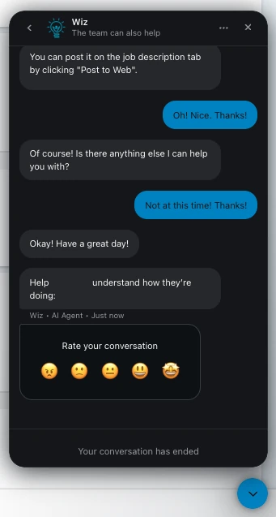
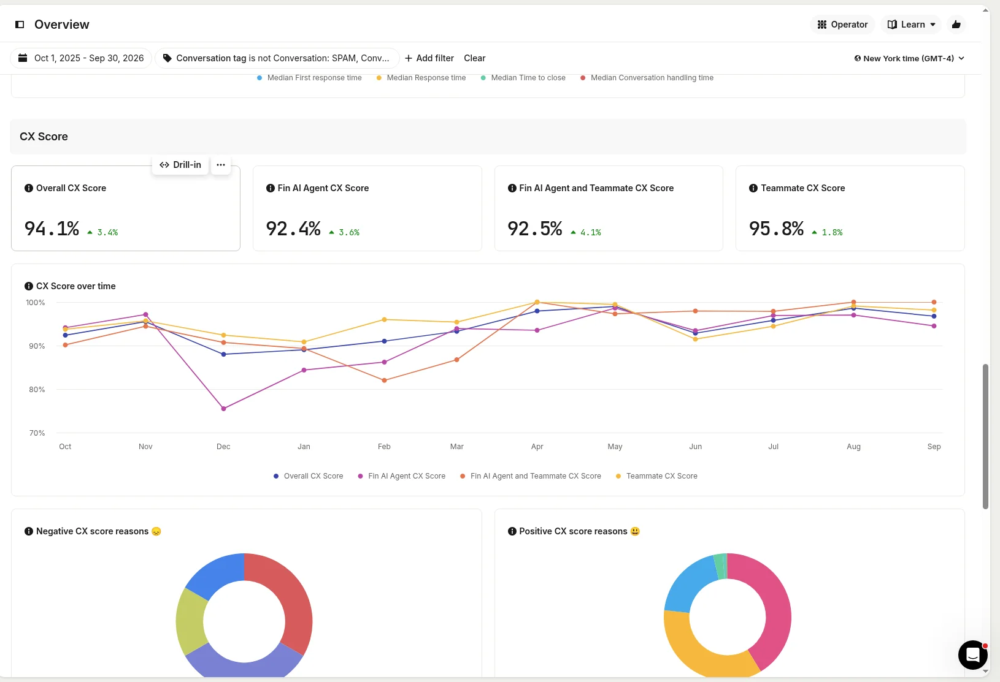
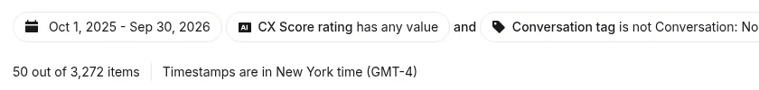
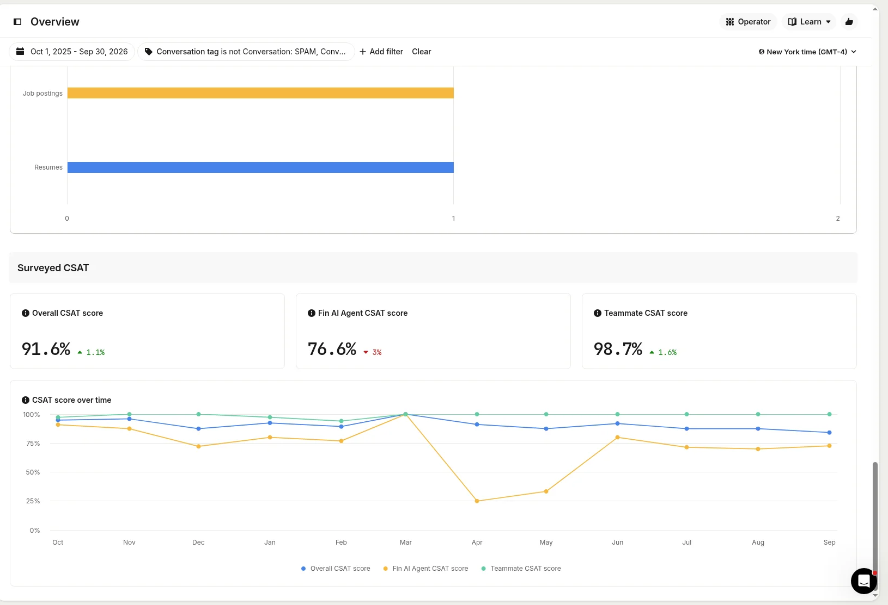
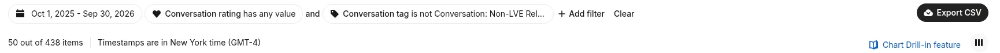
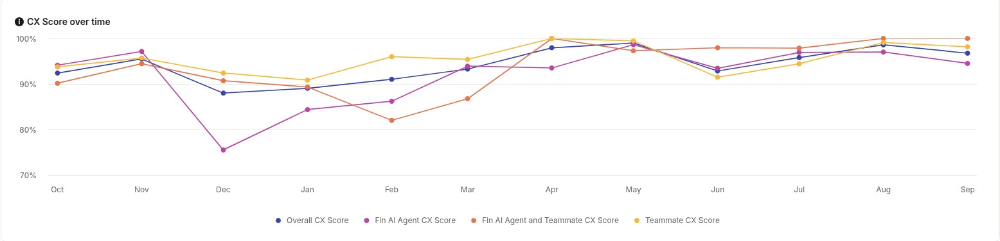
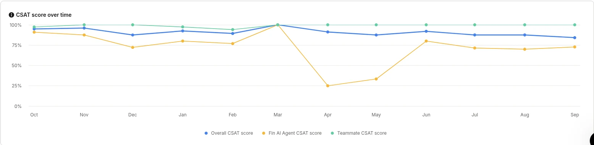
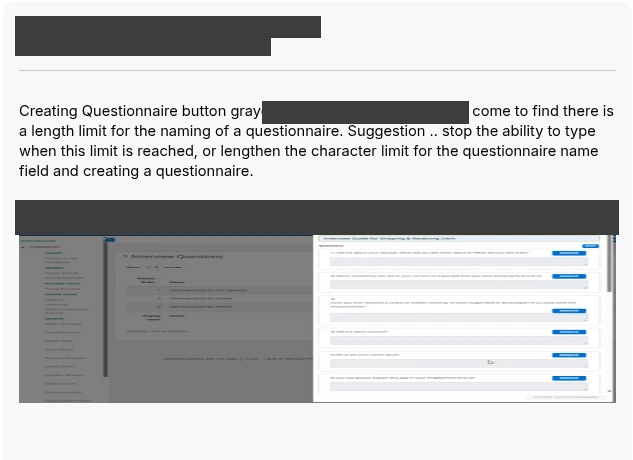
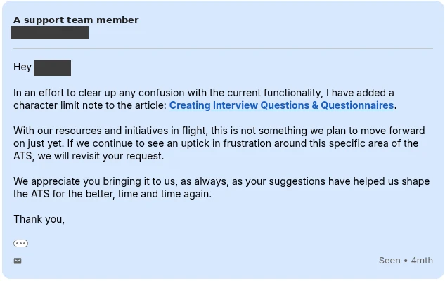

Entry 1: Best Customer Feedback Strategy
BrightMove Customer Feedback Loop. Category 85. In operation since July 2025.
1. How customers give feedback
Shows: giving feedback asks little or nothing of the customer.
- CX is inferred from the conversation, so it asks nothing of the customer.
- CSAT is a 1–5 star rating offered at the end of the same chat.
- Feature requests can be made in the conversation the customer is already in; Wiz explains how, and a person logs the request.
Original screenshot: rating prompt


The 5-point rating prompt at the end of a conversation. Source: Intercom Messenger. The user's name in the prompt has been redacted to protect their privacy.
2. Results
All figures: Intercom, Oct 1, 2025 – Sep 30, 2026, excluding spam, test, and account-maintenance conversations. CX is an AI rating of each conversation on resolution, sentiment, and service quality. How the figures are measured
Customer experience (CX)
Original dashboard screenshot A1


CX tiles. Source: Intercom Reports.
Original screenshot: overall CX sample size


Overall CX sample size: 3,272 conversations with a CX score. Source: Intercom Reports.
Customer satisfaction (CSAT)
CSAT: customer survey ratings; 4–5 stars counts as positive.
Original dashboard screenshot A2


CSAT tiles. Source: Intercom Reports.
Original screenshot: overall CSAT sample size


Overall CSAT sample size: 438 ratings. Source: Intercom Reports.
Trend
Monthly CX ranged from 88.0% (Dec 2025) to 99.0% (May 2026) and was above 92% in each of the last six months. Monthly CSAT samples are small (19–59 ratings a month), so month-to-month CSAT swings should be read with caution.
| Month | CX | CSAT |
|---|---|---|
| Oct 2025 | 92.4% (303/328) | 94.9% (56/59) |
| Nov 2025 | 95.5% (191/200) | 96.0% (24/25) |
| Dec 2025 | 88.0% (198/225) | 87.5% (35/40) |
| Jan 2026 | 89.0% (260/292) | 92.5% (49/53) |
| Feb 2026 | 91.0% (284/312) | 89.4% (42/47) |
| Mar 2026 | 93.3% (333/357) | 100% (48/48) |
| Apr 2026 | 97.9% (333/340) | 91.2% (31/34) |
| May 2026 | 99.0% (294/297) | 87.5% (28/32) |
| Jun 2026 | 92.9% (234/252) | 92.0% (23/25) |
| Jul 2026 | 95.8% (228/238) | 87.5% (28/32) |
| Aug 2026 | 98.6% (212/215) | 87.5% (21/24) |
| Sep 2026 | 96.8% (209/216) | 84.2% (16/19) |
Original screenshot: cx score by month


CX score by month. Source: Intercom Reports.
Original screenshot: csat score by month


CSAT score by month. Source: Intercom Reports.
Coverage beyond surveys
CX scores conversations whether or not the customer responds to a survey, so BrightMove hears from customers who would never fill one out: 3,272 conversations with a CX score versus 438 CSAT ratings, about 7.5 times as many.
3. How the loop closes
Shows: every negative score is reviewed weekly, traced to a root cause, and acted on.
Each week BrightMove's support team reviews every negative CX and CSAT score, plus the tagged account maintenance conversations. Each is traced to a root cause and acted on through a knowledge-base update, a change to Wiz's guidance, or a product request. When a customer was let down, the team follows up directly. Repeated maintenance work from large customers becomes a backlog candidate for self-service.
Example: an undocumented questionnaire name limit (June 2026)
- Jun 26, 2026: the feedback. A customer reported that the Create Questionnaire button was greyed out with no explanation. The questionnaire name had passed a character limit that was not documented anywhere. The customer suggested blocking typing at the limit or making the limit longer.
- Review. The team noted that users could not tell when they had crossed the limit, and that the limit was not documented.
- Same morning: the fix. A character-limit note was added to the help article Creating Interview Questions & Questionnaires. The product change was logged as not planned for now, to be revisited if the issue keeps coming up.
- About 90 minutes after the email arrived: the follow-up. A support team member told the customer:
In an effort to clear up any confusion with the current functionality, I have added a character limit note to the article: Creating Interview Questions & Questionnaires. With our resources and initiatives in flight, this is not something we plan to move forward on just yet. If we continue to see an uptick in frustration around this specific area of the ATS, we will revisit your request. We appreciate you bringing it to us, as always, as your suggestions have helped us shape the ATS for the better, time and time again.
Not every request can move ahead of planned development work. When a code change isn’t possible today, the team still closes the gap where it can: in the help center content customers and Wiz rely on.
Original screenshot: Customer email


Step 1: the customer’s feedback. Ticket title: Questionnaire Naming - Field Length Limitation. Source: Intercom.
Original screenshot: Follow-up email


Step 4: the follow-up pointing to the updated article. Source: Intercom.
[PENDING: one real example of maintenance work becoming a self-service backlog candidate, if available]
4. Case: the Download Resume button
Shows: the loop looks for the root cause behind a request, not just the request.
Customers repeatedly asked in chat for a way to mass-download resumes. Support looked for the root cause: reviewing a job's candidates meant leaving the job and opening each candidate profile just to download one resume. BrightMove chose not to build bulk export, because mass-downloading candidates' personal information could harm those candidates. Instead it built a Download Resume button inside the resume view on the job's Submittals tab. Each download remains a deliberate, per-resume choice.
- Nov 20, 2025: request logged
- Jun 29, 2026: flagged high priority after a recent increase in client requests
- Jun 30, 2026: resolved
- Jul 2, 2026: tested
- Released in version 2026.8.0
[PENDING: redacted Intercom chat screenshots, plus exact text excerpts of the customer ask and Wiz's answer (Wiz correctly said there was no way to mass download resumes at the time)]
[PENDING: redacted ticket record showing created, priority-change and resolved dates]
Observed after launch (not a controlled comparison) — pending confirmation
Datadog session data after release, Jul–Sep 2026: users of the button averaged 1.09 candidate-profile views per job view, versus 1.24 for non-users, about 12% fewer. Sample: about 5,404 sessions (275 button users, 5,129 non-users). This is an observation; other differences between the two groups may contribute.
[PENDING: confirm all figures and the “no announcement” statement before publishing]
[PENDING: analysis as a redacted PDF (not a link into BrightMove's Datadog)]
5. Two more shipped changes
Shows: the loop reaches the product backlog repeatedly.
Show Password
An executive at a staffing customer was locked out on Feb 10, 2026 and asked in chat for a show-password icon. A ticket was opened the same day; the feature shipped Apr 7, 2026.
[PENDING: redacted chat + ticket dates]"Required Correct" indicator
A candidate was auto-declined in March 2026 after the wrong version of a screening question was assigned. Chat Mar 26, 2026; ticket Apr 1, 2026; fix shipped Apr 20, 2026; tested Apr 22, 2026.
[PENDING: redacted chat + ticket dates]Optional additional evidence: a DocuSign document-title fix (ticket Aug 20, 2025, resolved Sep 22, 2025). [PENDING: only if a redacted chat is supplied; otherwise remove this line]